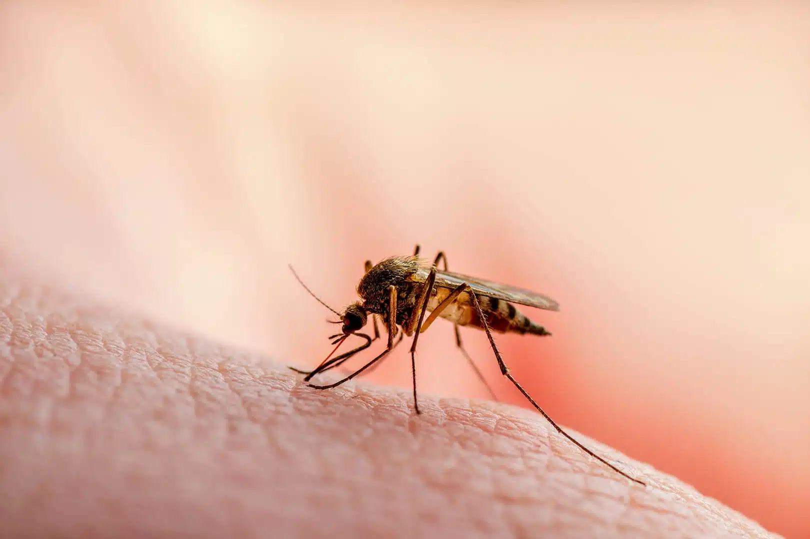
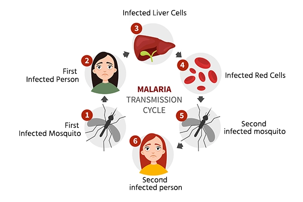
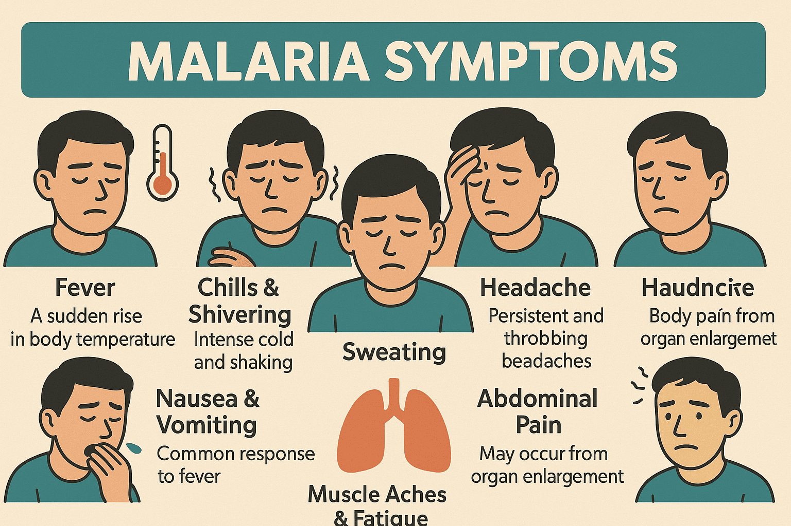

Amirhossein Banavreh

Malaria is a serious infectious disease caused by parasites that are transmitted to humans through the bites of infected female Anopheles mosquitoes. It is one of the oldest diseases known to humanity and continues to affect millions of people every year. Despite major advances in medicine and public health, malaria remains an important global health challenge.
The disease occurs mainly in tropical and subtropical regions where mosquitoes can survive and reproduce throughout the year. Warm temperatures, rainfall, and humidity create ideal conditions for the spread of malaria. As a result, many countries in Africa, Asia, and South America continue to experience significant numbers of infections.
Malaria is not only a medical problem but also a social and economic issue. Families may lose income when people become sick, children may miss school, and healthcare systems may face increased pressure. For these reasons, malaria prevention and treatment remain important priorities around the world.
Malaria has existed for thousands of years. Historical records suggest that symptoms similar to malaria were described in ancient civilizations, including Egypt, China, India, and Greece. For much of human history, people did not understand the true cause of the disease.
In the nineteenth century, scientists discovered that malaria was caused by parasites and later learned that mosquitoes were responsible for transmitting the infection. This discovery transformed public health and led to the development of effective prevention strategies.
Over time, researchers developed medicines to treat malaria and introduced mosquito control programs. These efforts significantly reduced the disease in many parts of the world, although malaria remains common in several regions today.
Malaria is caused by microscopic parasites belonging to the Plasmodium group. Several species can infect humans, but some are more dangerous than others. When an infected mosquito bites a person, parasites enter the bloodstream and travel to the liver.
Inside the liver, the parasites multiply and mature. They later return to the bloodstream, where they invade red blood cells. As the parasites continue to reproduce, infected cells break apart and release new parasites. This cycle is responsible for many of the symptoms experienced by patients.
The disease is usually transmitted through mosquito bites. However, rare cases may occur through blood transfusions, contaminated needles, organ transplants, or transmission from a mother to her baby during pregnancy.

The symptoms of malaria often appear ten to fifteen days after infection. The most common symptoms include fever, chills, sweating, headache, muscle pain, weakness, tiredness, nausea, and vomiting.
Many patients experience repeated fever cycles because parasites repeatedly infect and destroy red blood cells. These cycles can become severe and leave patients feeling exhausted.
Some people develop mild illness, while others experience severe complications. Severe malaria may affect the brain, kidneys, lungs, and other organs. In such cases, immediate medical treatment is essential.
Young children, pregnant women, older adults, and people with weakened immune systems are at greater risk of severe disease and complications.

Accurate diagnosis is essential for successful treatment. Doctors usually diagnose malaria using blood tests. These tests can identify the presence of parasites and determine the specific type of malaria involved.
Rapid diagnostic tests are also available in many regions. These tests can provide results quickly and help healthcare workers begin treatment sooner.
Early diagnosis is extremely important because prompt treatment can prevent serious complications and reduce the risk of death.
Malaria is treated with medicines known as antimalarial drugs. The choice of medication depends on the parasite species, local drug resistance patterns, the patient's age, and the severity of the disease.
Most patients recover completely when treatment begins early. Modern antimalarial medicines are highly effective and have saved millions of lives around the world.
Severe malaria often requires hospitalization. Patients may receive intravenous medications, fluids, and close monitoring by healthcare professionals.
Doctors may also treat complications such as anemia, dehydration, or breathing difficulties. Comprehensive care is important for patients with severe illness.
Preventing malaria is one of the most effective ways to reduce infections. Sleeping under insecticide-treated mosquito nets is a widely recommended method because mosquitoes are most active at night.
Using insect repellents, wearing long-sleeved clothing, and installing screens on windows can further reduce the risk of mosquito bites.
Communities can lower mosquito populations by eliminating standing water where mosquitoes breed. Public health authorities often conduct spraying programs and educational campaigns to promote prevention.
Travelers visiting areas where malaria is common may take preventive medications before, during, and after their trip. These medicines significantly reduce the risk of infection.
Scientists around the world continue to study malaria in order to develop better prevention methods, improved medicines, and more effective vaccines. Research has already produced major advances that have reduced malaria deaths in many countries.
One of the most exciting developments is the creation of malaria vaccines. Although vaccines do not provide complete protection, they can significantly reduce the risk of infection and severe illness.
Researchers are also studying drug resistance. Some malaria parasites have developed resistance to older medicines, making treatment more difficult. Understanding resistance helps scientists design new therapies.
Modern technologies such as genetic analysis, computer modeling, and advanced laboratory techniques allow researchers to better understand both parasites and mosquitoes.
Future discoveries may help eliminate malaria from many regions and improve health outcomes for millions of people.
Malaria affects societies in many ways. Beyond the direct health effects, the disease can reduce productivity, increase healthcare costs, and limit educational opportunities. Communities with high malaria rates often face economic challenges because illness can prevent people from working and attending school.
International organizations, governments, universities, and healthcare providers work together to reduce the burden of malaria. These partnerships support prevention programs, medical research, and access to treatment.
Over the past several decades, global efforts have saved millions of lives. However, continued commitment is necessary to maintain progress and prevent future outbreaks.
Malaria remains one of the world's most important infectious diseases. Although millions of people continue to be affected every year, major progress has been achieved through scientific research, prevention programs, improved medicines, and international cooperation.
Education, healthcare investment, mosquito control, and vaccine development all play important roles in reducing the impact of malaria. By continuing these efforts, the global community can move closer to a future where malaria is no longer a major threat to human health.
The fight against malaria demonstrates how science, medicine, and cooperation can improve lives and protect communities around the world.